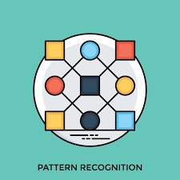
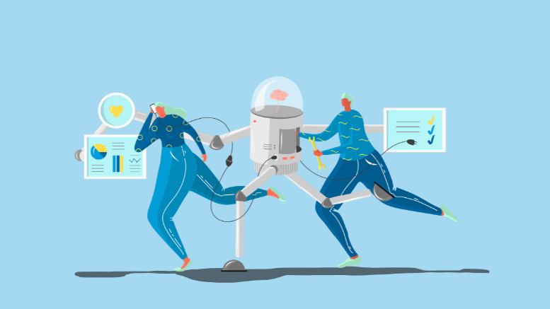
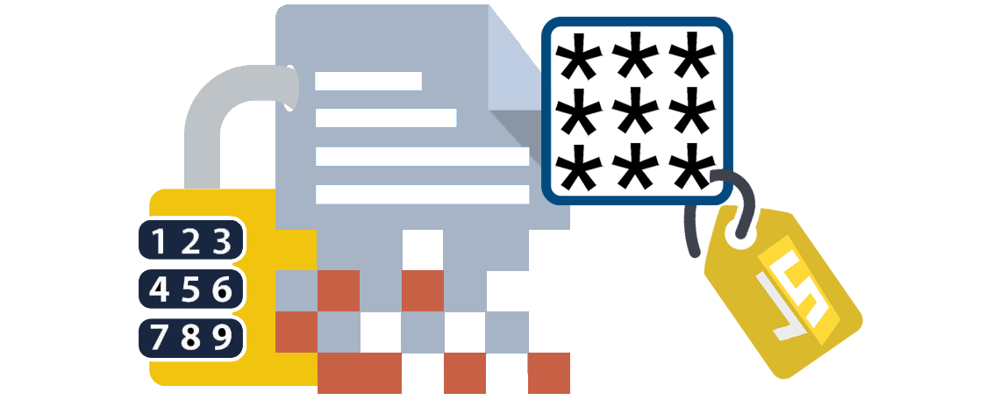
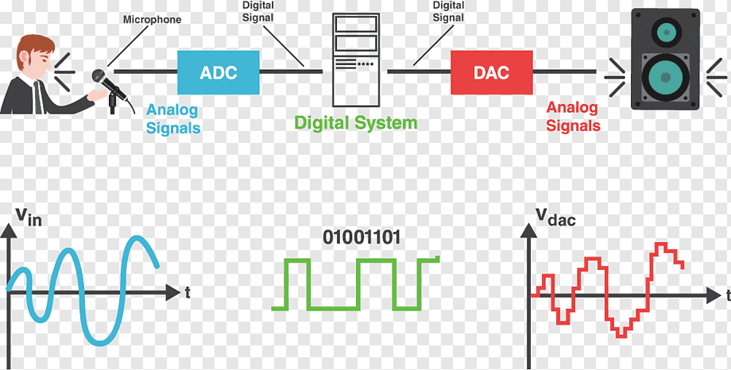

Introducción

En la actualidad,la computación y la robótica están presentes en casi todos los aspectos de nuestra vida,desde los juegos de video hasta los sistemas de producción industrial y alimentaria. El rápido avance de estas tecnologías se debe principalmente al intercambio de información y conocimiento entre los diferentes sectores involucrados en su desarrollo. Sin embargo, en dichas disciplinas, todavía hay grandes retos teóricos y prácticos por resolver.

En el presente número especial se seleccionaron 28 artículos cuyosprincipales tópicos son:
1-Reconocimiento de patrones
2-Inteligencia artificial
3-Teoría de control
4-Redes de computadoras
5-Programación Genética
6-Criptografía
7-Procesamiento de señales
8-Visión artificial

Reconocimiento de Patrones y la Inteligencia Artificial
La inteligencia artificial es un campo que ha experimentado un crecimiento exponencial gracias a los avances en el reconocimiento de patrones. La IA utiliza algoritmos de aprendizaje automático para identificar patrones en datos y tomar decisiones basadas en ellos. Esto se aplica en una variedad de aplicaciones, desde chatbots de servicio al cliente hasta diagnóstico médico asistido por computadora. 
Teoría de Control y Robótica
La teoría de control desempeña un papel vital en la robótica, donde los sistemas autónomos deben tomar decisiones en tiempo real para moverse y realizar tareas. El reconocimiento de patrones se utiliza para que los robots identifiquen objetos y obstáculos en su entorno, lo que les permite navegar de manera segura y llevar a cabo tareas complejas. 
Redes de Computadoras y Criptografía
Las redes de computadoras son la columna vertebral de la infraestructura que permite el procesamiento de datos distribuidos en tiempo real. La criptografía, una disciplina que se encarga de asegurar la comunicación y la privacidad de la información, se beneficia del reconocimiento de patrones para detectar actividades sospechosas o intentos de violación de seguridad. 
Ingeniería de Software y Programación Genética
La ingeniería de software es esencial para desarrollar sistemas de reconocimiento de patrones eficientes y confiables. La programación genética, una técnica de optimización inspirada en la evolución biológica, se ha aplicado con éxito para mejorar algoritmos de reconocimiento de patrones y encontrar soluciones más efectivas.
Procesamiento de Señales
La instrumentación y el procesamiento de señales son cruciales en aplicaciones como la medicina, donde se utilizan para analizar señales biométricas y médicas. El reconocimiento de patrones ayuda a identificar patrones relevantes en datos complejos, lo que permite el diagnóstico temprano de enfermedades y la toma de decisiones clínicas precisas. 